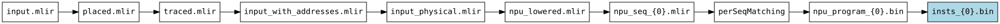
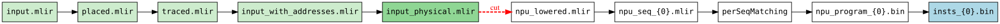
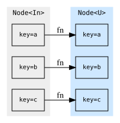
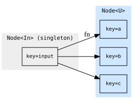
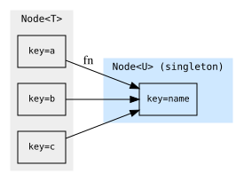
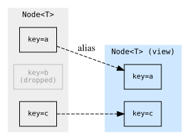
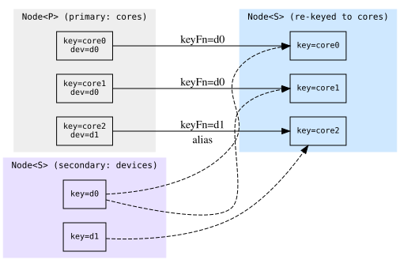
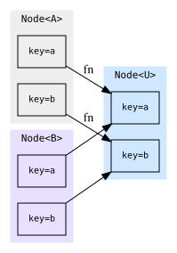
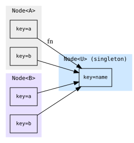
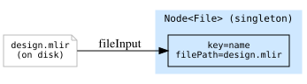

aiecc: the MLIR-AIE compiler driver¶
aiecc takes an AIE .mlir design and produces the artifacts needed to run it
on an NPU (instruction streams, ELFs, PDIs, xclbins, …).
To also build a host program that drives the array, pass --get-host
and put the host C/C++ sources after a --
User guide¶
The two most common flows¶
1. Instruction-sequence + xclbin flow. The host loads an xclbin (which
contains the array configuration) and, at dispatch time, streams a
per-runtime-sequence NPU instruction binary to the device:
aiecc --get-npu-insts --get-xclbin design.mlir
# -> insts_<device>_<seq>.bin (one per runtime sequence)
# -> aie.xclbin (configuration PDI, packaged)
2. Full-ELF flow. Everything — all device PDIs and instruction streams — is bundled into a single loadable ELF instead of an xclbin plus loose binaries:
You can override these output file names with --npu-insts-name,
--xclbin-name, and --full-elf-name. You can filter which devices and
runtime sequences are compiled with --device-name and --sequence-name.
Seeing what the compiler will do / dry-running: --emit-dot¶
The compiler builds its execution plan from the flags you pass.
Adding --emit-dot prints that plan (as a GraphViz graph) for exactly the
requested outputs and options and exits without compiling anything. You omit
the input file when you pass --emit-dot, as no compilation actually takes
place. For example, this shows the plan for the NPU-instruction flow and
renders it to an image:
Each box is a compilation step labelled by the artifact it produces, arrows show
dependencies between steps, and the outputs you requested are highlighted.
Changing the output flags (for instance to --get-full-elf) changes the
graph accordingly, so this is the fastest way to understand what a given
invocation will actually do. The command above produces this graph:

Stopping and restarting a build: --checkpoint and --resume¶
Sometimes you want to interrupt compilation partway through, look at or modify
an intermediate result, and then continue from that point rather than starting
over. --checkpoint and --resume let you do exactly that.
First, compile up to some intermediate stage and save the result. Here we stop
at the routed physical IR (--cut, described below, selects where to cut) and
write the checkpoint into the directory cp:
--cut stops the build at the named edge — nothing downstream of it runs, so no
final artifacts are produced — and snapshots that frontier. It requires
--checkpoint to say where to write the snapshot. The artifacts you eventually
want are built later, by --resume.
Now you can open the intermediate files saved in cp and edit them — for
instance, to hand-tweak the IR and see how a change affects the rest of the
build. When you are ready, resume from the checkpoint and ask for the artifact
you want (--get, described below). The saved frontier is read back from disk
(IR frontiers are re-parsed from their .mlir text), the stages before the
checkpoint are skipped entirely, and only what comes after runs:
The resume invocation rebuilds the graph from the flags recorded in the
checkpoint manifest, so it inherits the original device, toolchain and lowering
options automatically — you neither repeat them nor may override them. --resume
rejects any graph-shaping flag on its command line, since changing the graph
would invalidate the saved intermediates; only execution-only flags may
accompany it: --get, --cut, --checkpoint, -j, -v/--verbose, and
--progress.
This makes it easy to isolate a problem: compile up to just before a stage you suspect, change the intermediate result by hand, and re-run only what comes after it.
Adding --emit-dot previews where the checkpoint will cut the build. Here the
NPU-instruction flow is cut right after routing produces the physical IR: the
steps run before the cut are shaded green (the --cut frontier, whose artifacts
are saved to disk, darker), and the steps a --resume runs afterwards sit
across the dashed red cut arrows. Each edge runs at most once across the pair:
the prefix and frontier during --checkpoint, the downstream steps during
--resume (which reloads the frontier from disk rather than rebuilding it).

If an error occurs during compilation, aiecc will dump a checkpoint
capturing the state up to the first failing edge. This allows you to submit
a checkpoint as a reproducer, or investigate the issue yourself using the
exact inputs the failing step saw.
Extracting a single artifact: --get¶
--get=<name> asks for any single artifact in the build by name, including
intermediates that don't have their own --get-<name> shorthand (such as the
per-core objects or the routed IR). Run with --emit-dot to see the available
names; passing an unrecognized name prints the full list.
aiecc --get=objects_{0}.o design.mlir # just the per-core objects
aiecc --get=input_physical.mlir design.mlir # just the routed IR
--get and --resume work well together when you want just one final artifact
without redoing the whole build. First checkpoint all the intermediates up to
some stage, then resume and ask only for the one output you want; the compiler
reuses the checkpointed intermediates instead of recomputing them:
aiecc --cut=physical_with_elfs.mlir --checkpoint=cp design.mlir
aiecc --resume=cp/manifest.json --get=cdo_{0} # only the CDO, from the checkpoint
Developer guide¶
aiecc captures the build steps required for each requested output artifact
as a static graph: every kind of intermediate is a Node, every
transformation an edge, and the engine runs only the edges needed for the
artifacts you asked for.
Edge, Node, Item — and keys¶
Item<T>— one typed intermediate or output artifact; a payload of typeT(e.g., JSON, IR module, vector of bytes) plus akey, which uniquely identifies the payload among its peers. Items are materialized to disk lazily, i.e., only when a downstream edge needs them on disk. Payload types and their disk serializers live inItems.h.Node<T>— the collection of allItem<T>artifacts produced by one edge; for many edges this wraps a single item (e.g.aie.elf), but for some it contains many (e.g. the per-AIE-core.ofiles).Edge— a transformation from input node(s) to an output node, performing some action (a lambda, aPassPipeline, or aShellCommand). Edges may change the cardinality of the input/output nodes, e.g. split or join, or apply a transform to each item (map) -- see below.
Keys are what make fan-out/fan-in well-defined: an edge that splits a module
per-device produces one item per device, each with a stable key (the device
name). Downstream edges zip nodes by key, so a core's object, its ld script,
and its arch string all line up. Keys also name checkpoint frontier entries. In
edge output names/file paths, {0} gets substituted for each item's key.
Keeping the graph static¶
If you are adding logic to the driver, the single rule that makes everything
else work is: the graph declaration is static, and every dependency and every
file written must flow through the graph and the Item abstraction. Never
read inputs or write outputs out-of-band.
Why this matters¶
- The graph is declared unconditionally. No guards around edge construction
— every edge always exists. The engine prunes backward from the requested
outputs, so unrequested work never runs.
--emit-dot,--checkpoint, and--resumerely on this static shape. Itemowns materialization. AnItem<T>holds a typed payload and only writes it to disk when a downstream edge asks for its path viaasFile(). Intermediates that nobody needs on disk stay in memory automatically. If you write files yourself, you defeat this and break checkpointing.
Keep both invariants and the user-facing features above come for free.
Edge types¶
Each diagram shows the items (with their keys) of the input and output nodes and how the edge relates them.
map<U> — one output item per input item, applying the action
element-wise and preserving keys.

split<U> — explode a singleton input into many keyed output items.

join<U> — fold every item of a node into a single output item.

filter — a zero-copy view keeping only the items whose payload matches;
the surviving output items alias their source items rather than copying.

rekeyFrom<S> — re-key a secondary node onto this node's keys (a broadcast
/ keyed join): one output item per primary item, aliasing the secondary item
whose key equals keyFn(payload). Below, each core picks up its device's item.

bundle(a, b, …).map<U> — zip several nodes by key and run the action on
the matched items together, producing one output item per key.

bundle(a, b, …).join<U> — zip several nodes by key and fold all the
matched items into a single output item.

fileInput — seed the graph with an existing on-disk file; it has no input
node and produces a singleton Node<File>.

Mark an edge .threadSafe() only when its action touches no shared state
(external-tool invocations); such edges fan their per-key work across -j.
Putting it together: scatter / gather¶
A worked slice of the real driver — split a module per core (scatter), compile each core in parallel, then link each core against its object plus its script (gather over multiple keyed nodes):
// Scatter: one item per aie.core, keyed by "<device>_core_<col>_<row>".
auto &cores = physical.split<OpInModule<CoreOp>>(
"perCore_{0}.mlir",
SplitIRAction<CoreOp>([](CoreOp c) { return coreKey(c); }));
// Element-wise maps: each core gets its own object and ld script. The .o edge
// shells out to a tool, so it is thread-safe and runs under -j.
auto &objects = cores.map<ModRef>("lowered_{0}.mlir", lowerCore)
.map<File>("objects_{0}.o", ShellCommand{"llc"} /*...*/)
.threadSafe();
auto &scripts = cores.map<std::string>("ld_{0}.script", emitLdScript);
// Gather: zip the object and script nodes by key, link per core.
auto &elfs = bundle(objects.out, scripts.out)
.map<File>("elfs_{0}.elf",
ShellCommand{"clang"}.input().input("-Wl,-T,").output("-o"))
.threadSafe();
Each core flows independently from cores through to elfs; nothing hits disk
unless a downstream consumer (or a requested output) calls asFile(). Add a new
artifact by declaring more edges off an existing node and appending the terminal
edge to outputs — the engine and every user-facing feature above adapt
automatically.
For the full picture, start from buildMainGraph in aiecc.cpp, then read
Graph.h (edges) and Items.h (payloads).